Importación de librerias y scripts.
from pickle import load, dump
from pandas import DataFrame, concat
from cleaning import chisq_matrix
with open( 'DataRaw.pkl', 'rb' ) as f:
DataRaw = load(f)
DatRawCat = load(f)
with open( 'DataClean.pkl', 'rb' ) as f:
DataClean = load(f)
DataCat = load(f)
DataRaw
| TransactionID | isFraud | TransactionDT | TransactionAmt | card1 | card2 | card3 | card5 | addr1 | addr2 | ... | id_17 | id_18 | id_19 | id_20 | id_21 | id_22 | id_24 | id_25 | id_26 | id_32 | |
|---|---|---|---|---|---|---|---|---|---|---|---|---|---|---|---|---|---|---|---|---|---|
| 0 | 2987000 | 0 | 86400 | 68.50 | 13926 | 362.555488 | 150.0 | 142.0 | 315.0 | 87.0 | ... | 189.451377 | 14.237337 | 353.128174 | 403.882666 | 368.26982 | 16.002708 | 12.800927 | 329.608924 | 149.070308 | 26.508597 |
| 1 | 2987001 | 0 | 86401 | 29.00 | 2755 | 404.000000 | 150.0 | 102.0 | 325.0 | 87.0 | ... | 189.451377 | 14.237337 | 353.128174 | 403.882666 | 368.26982 | 16.002708 | 12.800927 | 329.608924 | 149.070308 | 26.508597 |
| 2 | 2987002 | 0 | 86469 | 59.00 | 4663 | 490.000000 | 150.0 | 166.0 | 330.0 | 87.0 | ... | 189.451377 | 14.237337 | 353.128174 | 403.882666 | 368.26982 | 16.002708 | 12.800927 | 329.608924 | 149.070308 | 26.508597 |
| 3 | 2987003 | 0 | 86499 | 50.00 | 18132 | 567.000000 | 150.0 | 117.0 | 476.0 | 87.0 | ... | 189.451377 | 14.237337 | 353.128174 | 403.882666 | 368.26982 | 16.002708 | 12.800927 | 329.608924 | 149.070308 | 26.508597 |
| 4 | 2987004 | 0 | 86506 | 50.00 | 4497 | 514.000000 | 150.0 | 102.0 | 420.0 | 87.0 | ... | 166.000000 | 14.237337 | 542.000000 | 144.000000 | 368.26982 | 16.002708 | 12.800927 | 329.608924 | 149.070308 | 32.000000 |
| ... | ... | ... | ... | ... | ... | ... | ... | ... | ... | ... | ... | ... | ... | ... | ... | ... | ... | ... | ... | ... | ... |
| 590535 | 3577535 | 0 | 15811047 | 49.00 | 6550 | 362.555488 | 150.0 | 226.0 | 272.0 | 87.0 | ... | 189.451377 | 14.237337 | 353.128174 | 403.882666 | 368.26982 | 16.002708 | 12.800927 | 329.608924 | 149.070308 | 26.508597 |
| 590536 | 3577536 | 0 | 15811049 | 39.50 | 10444 | 225.000000 | 150.0 | 224.0 | 204.0 | 87.0 | ... | 189.451377 | 14.237337 | 353.128174 | 403.882666 | 368.26982 | 16.002708 | 12.800927 | 329.608924 | 149.070308 | 26.508597 |
| 590537 | 3577537 | 0 | 15811079 | 30.95 | 12037 | 595.000000 | 150.0 | 224.0 | 231.0 | 87.0 | ... | 189.451377 | 14.237337 | 353.128174 | 403.882666 | 368.26982 | 16.002708 | 12.800927 | 329.608924 | 149.070308 | 26.508597 |
| 590538 | 3577538 | 0 | 15811088 | 117.00 | 7826 | 481.000000 | 150.0 | 224.0 | 387.0 | 87.0 | ... | 189.451377 | 14.237337 | 353.128174 | 403.882666 | 368.26982 | 16.002708 | 12.800927 | 329.608924 | 149.070308 | 26.508597 |
| 590539 | 3577539 | 0 | 15811131 | 279.95 | 15066 | 170.000000 | 150.0 | 102.0 | 299.0 | 87.0 | ... | 189.451377 | 14.237337 | 353.128174 | 403.882666 | 368.26982 | 16.002708 | 12.800927 | 329.608924 | 149.070308 | 26.508597 |
590540 rows × 403 columns
DataClean
| C1 | C3 | C5 | D1 | D3 | D10 | D11 | D12 | D13 | D14 | ... | V104 | V101 | V100 | V10 | TransactionAmt | D9 | D8 | D7 | D5 | D4 | |
|---|---|---|---|---|---|---|---|---|---|---|---|---|---|---|---|---|---|---|---|---|---|
| 0 | 1.0 | 0.0 | 0.0 | 14.0 | 13.000000 | 13.000000 | 13.000000 | 54.037533 | 17.901295 | 57.724444 | ... | 0.0 | 0.0 | 0.0 | 0.000000 | 68.50 | 0.561057 | 146.058108 | 41.63895 | 42.335965 | 140.002441 |
| 1 | 1.0 | 0.0 | 0.0 | 0.0 | 28.343348 | 0.000000 | 146.621465 | 54.037533 | 17.901295 | 57.724444 | ... | 0.0 | 0.0 | 0.0 | 0.463915 | 29.00 | 0.561057 | 146.058108 | 41.63895 | 42.335965 | 0.000000 |
| 2 | 1.0 | 0.0 | 0.0 | 0.0 | 28.343348 | 0.000000 | 315.000000 | 54.037533 | 17.901295 | 57.724444 | ... | 0.0 | 0.0 | 0.0 | 0.000000 | 59.00 | 0.561057 | 146.058108 | 41.63895 | 42.335965 | 0.000000 |
| 3 | 2.0 | 0.0 | 0.0 | 112.0 | 0.000000 | 84.000000 | 146.621465 | 54.037533 | 17.901295 | 57.724444 | ... | 0.0 | 1.0 | 4.0 | 0.463915 | 50.00 | 0.561057 | 146.058108 | 41.63895 | 0.000000 | 94.000000 |
| 4 | 1.0 | 0.0 | 0.0 | 0.0 | 28.343348 | 123.982137 | 146.621465 | 54.037533 | 17.901295 | 57.724444 | ... | 0.0 | 0.0 | 0.0 | 0.463915 | 50.00 | 0.561057 | 146.058108 | 41.63895 | 42.335965 | 140.002441 |
| ... | ... | ... | ... | ... | ... | ... | ... | ... | ... | ... | ... | ... | ... | ... | ... | ... | ... | ... | ... | ... | ... |
| 590535 | 2.0 | 0.0 | 1.0 | 29.0 | 30.000000 | 56.000000 | 56.000000 | 54.037533 | 17.901295 | 57.724444 | ... | 0.0 | 0.0 | 0.0 | 0.000000 | 49.00 | 0.561057 | 146.058108 | 41.63895 | 42.335965 | 140.002441 |
| 590536 | 1.0 | 0.0 | 0.0 | 0.0 | 28.343348 | 0.000000 | 0.000000 | 54.037533 | 17.901295 | 57.724444 | ... | 0.0 | 0.0 | 0.0 | 0.000000 | 39.50 | 0.561057 | 146.058108 | 41.63895 | 42.335965 | 0.000000 |
| 590537 | 1.0 | 0.0 | 1.0 | 0.0 | 28.343348 | 0.000000 | 0.000000 | 54.037533 | 17.901295 | 57.724444 | ... | 0.0 | 0.0 | 0.0 | 1.000000 | 30.95 | 0.561057 | 146.058108 | 41.63895 | 42.335965 | 0.000000 |
| 590538 | 1.0 | 0.0 | 0.0 | 22.0 | 0.000000 | 22.000000 | 22.000000 | 54.037533 | 17.901295 | 57.724444 | ... | 0.0 | 0.0 | 1.0 | 0.000000 | 117.00 | 0.561057 | 146.058108 | 41.63895 | 0.000000 | 22.000000 |
| 590539 | 2.0 | 0.0 | 1.0 | 0.0 | 0.000000 | 1.000000 | 0.000000 | 54.037533 | 17.901295 | 57.724444 | ... | 1.0 | 0.0 | 0.0 | 1.000000 | 279.95 | 0.561057 | 146.058108 | 41.63895 | 0.000000 | 1.000000 |
590540 rows × 28 columns
DataCat
| ProductCD | card4 | card6 | P_emaildomain | |
|---|---|---|---|---|
| 0 | W | discover | credit | gmail.com |
| 1 | W | mastercard | credit | gmail.com |
| 2 | W | visa | debit | outlook.com |
| 3 | W | mastercard | debit | yahoo.com |
| 4 | H | mastercard | credit | gmail.com |
| ... | ... | ... | ... | ... |
| 590535 | W | visa | debit | gmail.com |
| 590536 | W | mastercard | debit | gmail.com |
| 590537 | W | mastercard | debit | gmail.com |
| 590538 | W | mastercard | debit | aol.com |
| 590539 | W | mastercard | credit | gmail.com |
590540 rows × 4 columns
y = DataRaw[ 'isFraud' ]
Parte 1: Limpieza de los datos#
En primer lugar cabe aclarar que los datos faltantes para cada variable se rellenaron con sus respectivas modas o medias según la naturaleza de la variable. En el caso de las categóricas, se omitieron aquellas variables cuyo porcentaje de datos faltantes superaba el 20%, ya que reemplazar estos datos faltantes por la moda podría llegar
Para las variables continuas se usó el script provisto en el archivo cleaning.py, que consiste en dos fases de eliminación en base al mayor VIF en caso que este sea superior a 10 o 5. La primera fase ubica las dos variables independientes más correlacionadas entre sí y elimina aquella con mayor VIF en caso que supere el valor de 10. Este proceso para en el momento que la mayor correlación sea inferior a 0.5, despues de esto, se ejecuta la eliminación simple por VIF en el mayor de todos hasta que el mayor de los VIF sea inferior a 105. En últimas, esto garantiza una multicolinealidad extremadamente baja.
Por otro lado, la eliminación en las variables categóricas se realizó mediante una prueba de contingencia de \(\chi^2\), específicamente, se usó una matriz para visualizar el p-valor arrojado por la prueba entre las variables. Se pueden ver los resultados mencionados en la siguiente tabla:
chisq_matrix( concat( [ DataFrame( y, columns=['isFraud'] ), DataCat ], axis=1 ) )
| isFraud | ProductCD | card4 | card6 | P_emaildomain | |
|---|---|---|---|---|---|
| isFraud | 0.000000e+00 | 0.0 | 7.129275e-79 | 0.0 | 0.0 |
| ProductCD | 0.000000e+00 | 0.0 | 0.000000e+00 | 0.0 | 0.0 |
| card4 | 7.129275e-79 | 0.0 | 0.000000e+00 | 0.0 | 0.0 |
| card6 | 0.000000e+00 | 0.0 | 0.000000e+00 | 0.0 | 0.0 |
| P_emaildomain | 0.000000e+00 | 0.0 | 0.000000e+00 | 0.0 | 0.0 |
Es evidente que todas estas variables están fuertemente correlacionadas tanto entre sí mismas, como con la variable respuesta, por lo que es sufiente tomar una de estas para los modelos. En este caso se tomará la variable ProductCD, ya que no presentó datos faltantes (Esto se probará más adelante).
Procentaje de datos faltantes#
A continuación se pueden ver el porcentaje de los datos faltantes para las variables seleccionadas.
from pandas import merge, read_csv, DataFrame
DataMissing = merge(read_csv('train_transaction.csv'), read_csv('train_identity.csv'), on='TransactionID', how='left')[[
'isFraud', 'C1', 'C3', 'C5', 'D1', 'D3', 'D10', 'D11', 'D12', 'D13', 'D14', 'D15',
'ProductCD', "V142", "V141", "V138", "V135", "V131", "V130", "V12", "V104",
"V101", "V100", "V10", "TransactionAmt", "D9", "D8", "D7", "D5", "D4" ]]
Miss = DataFrame((DataMissing.isnull().sum() / DataMissing.shape[0])*100, columns=['%'])
Miss[ Miss['%'] >= 20 ].T.style.set_caption('Porcentaje de datos faltantes mayor o igual al 20%')
| D3 | D11 | D12 | D13 | D14 | V142 | V141 | V138 | V10 | D9 | D8 | D7 | D5 | D4 | |
|---|---|---|---|---|---|---|---|---|---|---|---|---|---|---|
| % | 44.514851 | 47.293494 | 89.041047 | 89.509263 | 89.469469 | 86.123717 | 86.123717 | 86.123717 | 47.293494 | 87.312290 | 87.312290 | 93.409930 | 52.467403 | 28.604667 |
Miss[ Miss['%'] < 20 ].T.style.set_caption('Porcentaje de datos faltantes menor al 20%')
| isFraud | C1 | C3 | C5 | D1 | D10 | D15 | ProductCD | V135 | V131 | V130 | V12 | V104 | V101 | V100 | TransactionAmt | |
|---|---|---|---|---|---|---|---|---|---|---|---|---|---|---|---|---|
| % | 0.000000 | 0.000000 | 0.000000 | 0.000000 | 0.214888 | 12.873302 | 15.090087 | 0.000000 | 0.053172 | 0.053172 | 0.053172 | 12.881939 | 0.053172 | 0.053172 | 0.053172 | 0.000000 |
Como se puede ver en la tabla, gran parte de las variables elegidas al final, tienen un porcentaje de datos faltantes mayor al 20%. Para mantener el sentido del modelo, es mejor eliminar estas variables, ya que gran parte se reemplazará por la media, lo que puede llegar a generar datos irrelevantes para los modelos. Finalmente, los datos independientes quedan de la siguiente manera:
from sklearn.preprocessing import OneHotEncoder
encoder = OneHotEncoder( sparse_output = False ).set_output( transform = 'pandas' )
transformed = encoder.fit_transform( DatRawCat[[ 'ProductCD' ]] )
encoded = DataFrame( transformed, columns = encoder.get_feature_names_out(['ProductCD']) )
X = concat( [ encoded, DataClean], axis = 1 )
X.drop( columns = ['D3', 'D11', 'D12', 'D13', 'D14', 'V142', 'V141', 'V138', 'V10', 'D9', 'D8', 'D7', 'D5', 'D4'], inplace=True )
X.head()
| ProductCD_C | ProductCD_H | ProductCD_R | ProductCD_S | ProductCD_W | C1 | C3 | C5 | D1 | D10 | D15 | V135 | V131 | V130 | V12 | V104 | V101 | V100 | TransactionAmt | |
|---|---|---|---|---|---|---|---|---|---|---|---|---|---|---|---|---|---|---|---|
| 0 | 0.0 | 0.0 | 0.0 | 0.0 | 1.0 | 1.0 | 0.0 | 0.0 | 14.0 | 13.000000 | 0.000000 | 0.0 | 0.0 | 0.0 | 1.000000 | 0.0 | 0.0 | 0.0 | 68.5 |
| 1 | 0.0 | 0.0 | 0.0 | 0.0 | 1.0 | 1.0 | 0.0 | 0.0 | 0.0 | 0.000000 | 0.000000 | 0.0 | 0.0 | 0.0 | 0.000000 | 0.0 | 0.0 | 0.0 | 29.0 |
| 2 | 0.0 | 0.0 | 0.0 | 0.0 | 1.0 | 1.0 | 0.0 | 0.0 | 0.0 | 0.000000 | 315.000000 | 0.0 | 0.0 | 0.0 | 1.000000 | 0.0 | 0.0 | 0.0 | 59.0 |
| 3 | 0.0 | 0.0 | 0.0 | 0.0 | 1.0 | 2.0 | 0.0 | 0.0 | 112.0 | 84.000000 | 111.000000 | 0.0 | 135.0 | 354.0 | 1.000000 | 0.0 | 1.0 | 4.0 | 50.0 |
| 4 | 0.0 | 1.0 | 0.0 | 0.0 | 0.0 | 1.0 | 0.0 | 0.0 | 0.0 | 123.982137 | 163.744579 | 0.0 | 0.0 | 0.0 | 0.559711 | 0.0 | 0.0 | 0.0 | 50.0 |
with open( 'DataML.pkl', 'wb' ) as f:
dump( y, f )
dump( X, f )
from pickle import load, dump
with open( 'DataML.pkl', 'rb' ) as f:
y = load( f )
X = load( f )
Parte 2: Análisis exploratorio de los datos#
Variable dependiente#
import seaborn as sns
import pandas as pd
import matplotlib.pyplot as plt
import warnings
warnings.filterwarnings("ignore")
y_df = pd.DataFrame(y, columns=['isFraud'])
value_counts = y_df['isFraud'].value_counts()
value_counts_df = pd.DataFrame({'Value': value_counts.index, 'Count': value_counts.values})
plt.figure(figsize=(8, 6))
sns.barplot(x='Value', y='Count', data=value_counts_df, palette='Set2')
plt.title('Gráfico de barras de fraude')
plt.xlabel('Fraude')
plt.ylabel('Frecuencia')
plt.grid(True, axis='y')
plt.show()
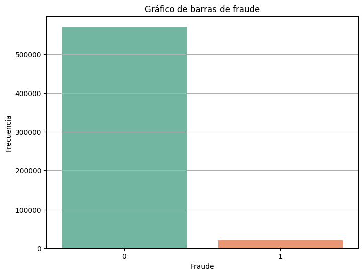
Como se puede ver en la gráfica, la variable isFraud cuenta con un total de 569877 (97%) de transacciones lícitas, por lo que puede ser problemático para la generación de modelos sin una forma de balancear la desproporción.
ProductCD#
value_counts = DataCat['ProductCD'].value_counts()
value_counts_df = pd.DataFrame({'Value': value_counts.index, 'Count': value_counts.values})
plt.figure(figsize=(8, 6))
sns.barplot(x='Value', y='Count', data=value_counts_df, palette='Set2')
plt.title('Gráfico de barras de código de producto')
plt.xlabel('Fraude')
plt.ylabel('Frecuencia')
plt.grid(True, axis='y')
plt.show()
from pandas import crosstab
from numpy import zeros, array, append
eda_df = concat( [ y_df, DataCat ], axis = 1 )
cross_table = crosstab( eda_df['isFraud'], eda_df['ProductCD'] )
ct = dict()
cross_dict = cross_table.to_dict()
for key in cross_dict:
item = array([])
for sub_key in cross_dict[ key ]: item = append( item, cross_dict[ key ][ sub_key ] )
ct[ key ] = item
isFraud = ( '0', '1' )
fig, ax = plt.subplots(figsize=(8, 6))
bottom = zeros(2)
for boolean, count in ct.items():
p = ax.bar(isFraud, count, label=boolean, bottom=bottom )
bottom += count
ax.set_title("Código de producto según fraude detectado")
ax.legend(loc="upper right")
plt.show()

Variables contínuas#
Se puede observar el resumen de las variables en la siguiente tabla
X.drop( columns = [ 'ProductCD_C', 'ProductCD_H', 'ProductCD_R', 'ProductCD_S', 'ProductCD_W' ] ).describe()
| C1 | C3 | C5 | D1 | D10 | D15 | V135 | V131 | V130 | V12 | V104 | V101 | V100 | TransactionAmt | |
|---|---|---|---|---|---|---|---|---|---|---|---|---|---|---|
| count | 590540.000000 | 590540.000000 | 590540.000000 | 590540.000000 | 590540.000000 | 590540.000000 | 590540.000000 | 590540.000000 | 590540.000000 | 590540.000000 | 590540.000000 | 590540.000000 | 590540.000000 | 590540.000000 |
| mean | 14.092458 | 0.005644 | 5.571526 | 94.347568 | 123.982137 | 163.744579 | 17.250132 | 31.133302 | 92.165849 | 0.559711 | 0.085433 | 0.889249 | 0.273504 | 135.027176 |
| std | 133.569018 | 0.150536 | 25.786976 | 157.490898 | 170.456102 | 186.805646 | 293.769431 | 161.118406 | 315.876473 | 0.476516 | 0.648545 | 20.577098 | 0.946924 | 239.162522 |
| min | 0.000000 | 0.000000 | 0.000000 | 0.000000 | 0.000000 | -83.000000 | 0.000000 | 0.000000 | 0.000000 | 0.000000 | 0.000000 | 0.000000 | 0.000000 | 0.251000 |
| 25% | 1.000000 | 0.000000 | 0.000000 | 0.000000 | 0.000000 | 0.000000 | 0.000000 | 0.000000 | 0.000000 | 0.000000 | 0.000000 | 0.000000 | 0.000000 | 43.321000 |
| 50% | 1.000000 | 0.000000 | 0.000000 | 3.000000 | 43.000000 | 117.000000 | 0.000000 | 0.000000 | 0.000000 | 0.559711 | 0.000000 | 0.000000 | 0.000000 | 68.769000 |
| 75% | 3.000000 | 0.000000 | 1.000000 | 121.000000 | 150.000000 | 251.000000 | 0.000000 | 0.000000 | 59.000000 | 1.000000 | 0.000000 | 0.000000 | 0.000000 | 125.000000 |
| max | 4685.000000 | 26.000000 | 349.000000 | 640.000000 | 876.000000 | 879.000000 | 90750.000000 | 55125.000000 | 55125.000000 | 3.000000 | 15.000000 | 869.000000 | 28.000000 | 31937.391000 |
Es evidente que para la mayoria de variables, la desviación estándar es mucho más alta que la media, por lo que los datos van a estar extremadamente dispersos. Más aún, Todos los máximos son extremadamente altos, mucho más que el tercer cuartil, por tanto se evidencian datos extremadamente atípicos. También es notable la diferencia entre la media y la mediana, lo que implica que todas las variables tienen una severa asimetría.
TransactionAmt#
transaction_amt_values = X['TransactionAmt']
plt.figure(figsize=(10, 6))
plt.hist(transaction_amt_values, bins=10, color='skyblue', edgecolor='black')
plt.title('Histograma del monto')
plt.xlabel('Monto de la transacción')
plt.ylabel('Frequency')
plt.grid(True)
plt.show()

Es notable que casi el total de los datos se encuentra en el primer intérvalo inferior a 5000, además el tamaño del intérvalo implica la existencia de uno o más datos atípicos extremadamente altos.
eda_df = concat( [eda_df, X], axis = 1 )
eda_df['isFraud'] = eda_df['isFraud'].astype(str)
plt.figure(figsize=(10, 6))
sns.boxplot(x='TransactionAmt', y='isFraud', data=eda_df, palette='Set2' )
plt.title('Cantidad del monto según fraude detectado')
plt.xlabel('Monto')
plt.ylabel('Fraude')
plt.grid(True)
plt.show()
Como se mencionó previamente, se encuentra un dato extremádamente atípico. Podemos ver que hay una tendencia para las transacciones lícitas en alcanzar valores más altos, aún así, no se pueden sacar muchas conclusiones dada la desproporción de los datos.
C1#
values = X['C1']
plt.figure(figsize=(10, 6))
plt.hist(values, bins=10, color='skyblue', edgecolor='black')
plt.title('Histograma de C1')
plt.xlabel('C1')
plt.ylabel('Frequency')
plt.grid(True)
plt.show()
Así como en la variable anterior, se encuentra una asimetría extrema. Esto se debe especialmente al hecho que el 75% de los datos es menor o igual a 3, mientras que hay un rango extremadamente amplio.
plt.figure(figsize=(10, 6))
sns.boxplot(x='C1', y='isFraud', data=eda_df, palette='Set2' )
plt.title('C1 según fraude detectado')
plt.xlabel('C1')
plt.ylabel('Fraude')
plt.grid(True)
plt.show()

En este caso tambien es evidente que hay mayor concentración de datos atípicos en el conjunto lícito dada la disparidad, pero se puede ver claramente que ambas mantienen cierta similitud. Como se pudo ver en la tabla descriptiva, la gran mayoria de las variables se concentran en el intérvalo de 0-3.
C3#
values = X['C3']
plt.figure(figsize=(10, 6))
plt.hist(values, bins=10, color='skyblue', edgecolor='black')
plt.title('Histograma de C3')
plt.xlabel('C3')
plt.ylabel('Frequency')
plt.grid(True)
plt.show()

Es notorio que no se puede apreciar ningún valor por fuera del intérvalo marcado, por lo que como el resto de variables, es evidencia de muchos datos atípicos.
plt.figure(figsize=(10, 6))
sns.boxplot(x='C3', y='isFraud', data=eda_df, palette='Set2' )
plt.title('C3 según fraude detectado')
plt.xlabel('C3')
plt.ylabel('Fraude')
plt.grid(True)
plt.show()
Como se menciona antes, la mayoria de datos se concentra en el valor de 0, aún así, se presentan unos cuantos datos atípicos en la parte lícita de las transacciones.
C5#
values = X['C5']
plt.figure(figsize=(10, 6))
plt.hist(values, bins=10, color='skyblue', edgecolor='black')
plt.title('Histograma de C5')
plt.xlabel('C5')
plt.ylabel('Frequency')
plt.grid(True)
plt.show()

A diferencia de las variables anteriores, esta sí permite observar unos cuantos valores por fuera de los valores iniciales, aún así, mantiene el patrón previo de una concentración de datos extrema al inicio del intérvalo.
plt.figure(figsize=(10, 6))
sns.boxplot(x='C5', y='isFraud', data=eda_df, palette='Set2' )
plt.title('C5 según fraude detectado')
plt.xlabel('C5')
plt.ylabel('Fraude')
plt.grid(True)
plt.show()
Por otro lado, podemos observar una ligera diferencia más marcada entre los casos de fraude, ya que las transacciones lícitas tienen en general datos atípicos mayores que los de las transacciones marcadas como fraude.
D1#
values = X['D1']
plt.figure(figsize=(10, 6))
plt.hist(values, bins=10, color='skyblue', edgecolor='black')
plt.title('Histograma de D1')
plt.xlabel('D1')
plt.ylabel('Frequency')
plt.grid(True)
plt.show()

De forma similar a la variable anterior, a pesar de tener datos atípicos, es evidente que la variable posee una distribución más cercana al origen.
plt.figure(figsize=(10, 6))
sns.boxplot(x='D1', y='isFraud', data=eda_df, palette='Set2' )
plt.title('D1 según fraude detectado')
plt.xlabel('D1')
plt.ylabel('Fraude')
plt.grid(True)
plt.show()
Es evidente que las transacciones lícitas tienen tendencia a poseer un valor mayor de la variable D1.
D10#
values = X['D10']
plt.figure(figsize=(10, 6))
plt.hist(values, bins=10, color='skyblue', edgecolor='black')
plt.title('D10')
plt.xlabel('D10')
plt.ylabel('Frequency')
plt.grid(True)
plt.show()

Esta variable presenta una distribución aún menos dispersa que la anterior, por lo que se puede esperar una mejor representación de la variable respuesta.
plt.figure(figsize=(10, 6))
sns.boxplot(x='D10', y='isFraud', data=eda_df, palette='Set2' )
plt.title('D10 según fraude detectado')
plt.xlabel('D10')
plt.ylabel('Fraude')
plt.grid(True)
plt.show()
Es evidente que la mediana de las transacciones lícitas es mayor a aquella de las ilícitas, mientras que los datos atípicos se extienden a un mayor rango.
D15#
values = X['D15']
plt.figure(figsize=(10, 6))
plt.hist(values, bins=10, color='skyblue', edgecolor='black')
plt.title('Histograma de D15')
plt.xlabel('D15')
plt.ylabel('Frequency')
plt.grid(True)
plt.show()
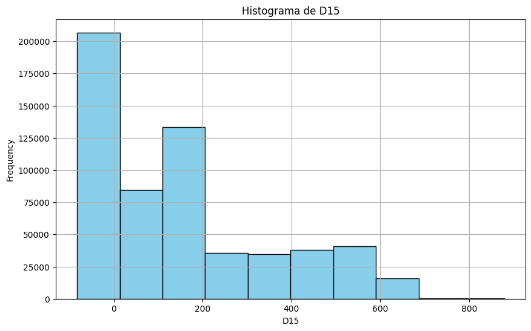
Esta variable comparte comportamiento con la variable anterior, presentando aún menos dispersión de los datos.
plt.figure(figsize=(10, 6))
sns.boxplot(x='D15', y='isFraud', data=eda_df, palette='Set2' )
plt.title('D15 según fraude detectado')
plt.xlabel('D15')
plt.ylabel('Fraude')
plt.grid(True)
plt.show()

De la misma forma, hay una diferencia marcada en la mediana para ambas categorías.
V100#
values = X['V100']
plt.figure(figsize=(10, 6))
plt.hist(values, bins=10, color='skyblue', edgecolor='black')
plt.title('Histograma de V100')
plt.xlabel('V100')
plt.ylabel('Frequency')
plt.grid(True)
plt.show()
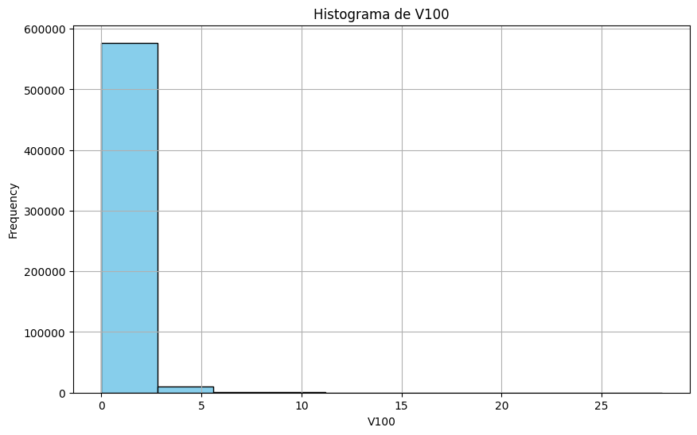
Por otro lado, esta variable presenta un comportamiento similar a las primeras variables, donde se espera una gran cantidad de datos atípicos.
plt.figure(figsize=(10, 6))
sns.boxplot(x='V100', y='isFraud', data=eda_df, palette='Set2' )
plt.title('V100 según fraude detectado')
plt.xlabel('V100')
plt.ylabel('Fraude')
plt.grid(True)
plt.show()
Aún así, esta variable presenta una ligera diferencia para la variable categórica, dado que los datos atípicos ( o mayores a 0 ), se extienden más para las transacciones lícitas
V131#
values = X['V131']
plt.figure(figsize=(10, 6))
plt.hist(values, bins=10, color='skyblue', edgecolor='black')
plt.title('Histograma de V131')
plt.xlabel('V131')
plt.ylabel('Frequency')
plt.grid(True)
plt.show()

Esta variable presenta el mismo comportamiento a la primera variable, donde no son evidentes valores por fuera de un intervalo, lo que implica que hay valores atípicos extremadamente grandes.
plt.figure(figsize=(10, 6))
sns.boxplot(x='V131', y='isFraud', data=eda_df, palette='Set2' )
plt.title('V131 según fraude detectado')
plt.xlabel('V131')
plt.ylabel('Fraude')
plt.grid(True)
plt.show()

Como se menciona antes, la mayoría de datos se concentran en el valor 0, teniendo unos cuantos datos atípicos más grandes en las transacciones lícitas.
Parte 3: Modelos de clasificación#
En primer lugar, para evitar fuga de información, se separará un conjunto de prueba, dado el uso de ADASYN
from sklearn.model_selection import train_test_split
y = y.astype(int)
X_train, X_test, y_train, y_test = train_test_split( X, y, test_size = 0.2, random_state = 37 )
y_df = pd.DataFrame(y_test, columns=['isFraud'])
value_counts = y_df['isFraud'].value_counts()
value_counts_df = pd.DataFrame({'Value': value_counts.index, 'Count': value_counts.values})
plt.figure(figsize=(8, 6))
sns.barplot(x='Value', y='Count', data=value_counts_df, palette='Set2')
plt.title('Gráfico de barras de fraude muestreado')
plt.xlabel('Fraude')
plt.ylabel('Frecuencia')
plt.grid(True, axis='y')
plt.show()
Como se puede ver, el conjunto de testeo mantiene la proporción antes mencionada de 97-3. Ahora bien, se realizarán los modelos con y sin rebalanceamiento ADASYN. Podemos visualizar la nueva variable dependiente balanceada con la siguiente gráfica:
from imblearn.over_sampling import ADASYN
adasyn = ADASYN( random_state = 37 )
X_bal, y_bal = adasyn.fit_resample( X_train, y_train )
y_df = pd.DataFrame(y_bal, columns=['isFraud'])
value_counts = y_df['isFraud'].value_counts()
value_counts_df = pd.DataFrame({'Value': value_counts.index, 'Count': value_counts.values})
plt.figure(figsize=(8, 6))
sns.barplot(x='Value', y='Count', data=value_counts_df, palette='Set2')
plt.title('Gráfico de barras de fraude rebalanceado')
plt.xlabel('Fraude')
plt.ylabel('Frecuencia')
plt.grid(True, axis='y')
plt.show()

with open( 'DataModels.pkl', 'wb' ) as f:
dump( ( X_train, X_bal, X_test ), f )
dump( ( y_train, y_bal, y_test ), f )
with open( 'DataModels.pkl', 'rb' ) as f:
X_train, X_bal, X_test = load( f )
y_train, y_bal, y_test = load( f )
from pickle import load, dump
from sklearn.metrics import precision_score, recall_score, f1_score, roc_auc_score, roc_curve, confusion_matrix
import matplotlib.pyplot as plt
import seaborn as sns
from numpy import newaxis
def evaluate_model(model, X_test, y_test):
y_proba = model.predict_proba(X_test)[:, 1]
y_pred = model.predict(X_test)
if not set(y_pred).issubset({0, 1}):
raise ValueError("Predictions contain values other than 0 and 1")
precision = precision_score(y_test, y_pred)
recall = recall_score(y_test, y_pred)
f1 = f1_score(y_test, y_pred)
auc = roc_auc_score(y_test, y_proba)
return {
'Precision': precision,
'Recall': recall,
'F1': f1,
'AUC': auc
}
def plot_roc_curve(model, X_test, y_test):
y_proba = model.predict_proba(X_test)[:, 1]
fpr, tpr, _ = roc_curve(y_test, y_proba)
plt.figure(figsize=(10, 6))
plt.plot(fpr, tpr, label=f'Curva ROC(area = {roc_auc_score(y_test, y_proba)})' )
plt.plot([0, 1], [0, 1], 'k--')
plt.xlim([0.0, 1.0])
plt.ylim([0.0, 1.05])
plt.xlabel('Porcentaje de Falsos Positivos')
plt.ylabel('Porcentaje de Verdaderos Positivos')
plt.title('Curva ROC')
plt.legend(loc="lower right")
plt.show()
def plot_confusion_matrix(model, X_test, y_test):
y_pred = model.predict(X_test)
cm = confusion_matrix(y_test, y_pred)
cm_norm = cm.astype('float') / cm.sum(axis=1)[:, newaxis] * 100
plt.figure(figsize=(8, 6))
sns.heatmap(cm_norm, annot=True, cmap="Blues", fmt=".2f", cbar=False, annot_kws={"size": 14})
plt.xlabel('Predicho')
plt.ylabel('Verdadero')
plt.title('Matriz de confusión')
plt.show()
indexes = []
results = []
Clasificación Bayesiana#
from pandas import DataFrame
with open( 'Models/NaiveBayesModel.pkl', 'rb' ) as f:
NBayes_model_base = load( f )
NBayes_model_ada = load( f )
Base#
Los resultados del modelo en el set de prueba son los siguientes:
result = evaluate_model( NBayes_model_base, X_test, y_test )
indexes.append( 'Naive Bayes Base' )
results.append( result )
DataFrame( [result], index = ['Naive Bayes'] )
| Precision | Recall | F1 | AUC | |
|---|---|---|---|---|
| Naive Bayes | 0.482731 | 0.1463 | 0.224547 | 0.751902 |
Los puntajes del modelo son muy bajos, lo que implica que el modelo no va a ser un buen clasificador para la variable respuesta. Lo único rescatable puede ser su puntaje de AUC, pero como se verá en próximos modelos, es uno de los más bajos.
plot_roc_curve( NBayes_model_base, X_test, y_test )

La curva ROC nos muestra que la clasificación es pasable para detectar la categoría de la variable respuesta, aún así, se encuentra muy lejos de ser un buen modelo.
plot_confusion_matrix( NBayes_model_base, X_test, y_test )

En esta gráfica se puede evidenciar lo que será el problema para muchos modelos en este trabajo: tiene una mayor tendencia a predecir una etiqueta como negativa, ya que el desbalance genera una tendencia para los modelos de sobreajustarse a la categoría mayoritaria.
AdaSyn#
Los resultados del modelo se ven a continuación:
result = evaluate_model( NBayes_model_ada, X_test, y_test )
indexes.append( 'Naive Bayes AdaSyn' )
results.append( result )
DataFrame( [result], index = ['Naive Bayes'] )
| Precision | Recall | F1 | AUC | |
|---|---|---|---|---|
| Naive Bayes | 0.078335 | 0.701315 | 0.140928 | 0.752869 |
Es evidente la diferencia abismal entre los dos modelos, ya que sus precision y recall estan casi intercambiados, esto sin mejorar su AUC.
plot_roc_curve( NBayes_model_ada, X_test, y_test )

Su curva ROC presenta un comportamiento similar al base, como se evidencia en su similitud de valores AUC.
plot_confusion_matrix( NBayes_model_ada, X_test, y_test )

Ahora biem, esta gráfica permite entender la importancia del rebalanceamiento de los datos, ya que permitió homogeneizar el porcentaje de tanto verdaderos positivos como de verdaderos negativos. Cabe aclarar que las deficiencias en los scores se deben al hecho que la variable de prueba no está rebalanceada, por lo que los negativos que no llega a predecir suman más al error que aquellas positivas que no predice.
Árboles de decisión#
El modelo resultante queda de la siguiente forma
with open( 'Models/DecisionTreeModel.pkl', 'rb' ) as f:
DTree_model_base = load( f )
DTree_model_ada = load( f )
Base#
Los parámetros del árbol son los siguientes
DataFrame( [DTree_model_base.best_params_], index = ['Decision Tree base'] )
| max_depth | |
|---|---|
| Decision Tree base | 8 |
result = evaluate_model( DTree_model_base, X_test, y_test )
indexes.append( 'Decision Tree Base' )
results.append( result )
DataFrame( [result], index = ['Decision Tree'] )
| Precision | Recall | F1 | AUC | |
|---|---|---|---|---|
| Decision Tree | 0.782021 | 0.239289 | 0.366449 | 0.811308 |
Está claro que a comparación del modelo anterior, presenta mejores scores en todos los tipos. Incluso es capaz de tener un recall relativamente alto con respecto al resto de modelos base.
from numpy import argsort
feature_importances = DTree_model_base.best_estimator_.feature_importances_
sorted_indices = argsort(feature_importances)
sorted_feature_names = [X_train.columns[i] for i in sorted_indices]
plt.figure(figsize=(10, 6))
plt.barh(range(len(feature_importances)), feature_importances[sorted_indices], align='center')
plt.yticks(range(len(feature_importances)), sorted_feature_names)
plt.xlabel('Feature Importance')
plt.ylabel('Feature')
plt.title('Feature Importances (XGBoost)')
plt.show()
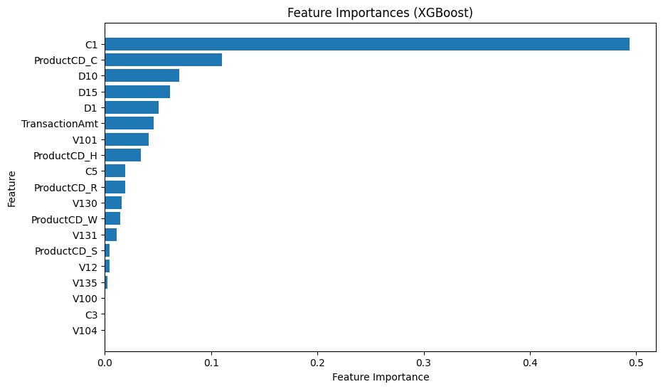
Se puede ver que la variable que mas influye en la desición del árbol es C1 y el código de producto, recordado que está codificada en la base de datos.
plot_roc_curve( DTree_model_base, X_test, y_test )

La curva ROC indica que el modelo es apropiado para las predicciones, incluso se puede ver como se ajusta mejor al limite izquierdo del gráfico.
plot_confusion_matrix( DTree_model_base, X_test, y_test )
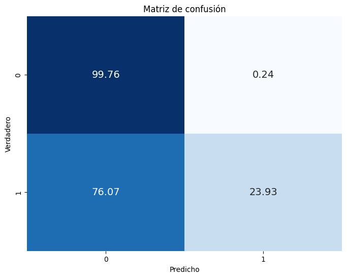
Como se mencionó antes, el modelo no es muy bueno detectando fraudes. De todos modos hay que tener en cuenta que el porcentaje de verdaderos positivos es relativamente alto con respecto al resto.
AdaSyn#
DataFrame( [DTree_model_ada.best_params_], index = ['Decision Tree AdaSyn'] )
| max_depth | |
|---|---|
| Decision Tree base | 8 |
El modelo comparte profundidad con su contraparte base.
result = evaluate_model( DTree_model_ada, X_test, y_test )
indexes.append( 'Decision Tree AdaSyn' )
results.append( result )
DataFrame( [result], index = ['Decision Tree'] )
| Precision | Recall | F1 | AUC | |
|---|---|---|---|---|
| Decision Tree | 0.113877 | 0.606865 | 0.191769 | 0.795088 |
Al igual que en el modelo anterior, el recall aumenta de forma drástica, disminuyendo la presición. Tambien cabe resaltar la pérdida importante de F1 y AUC que presenta el modelo en comparación a la base, por lo que se puede decir que es un peor modelo para predecir la variable respuesta.
feature_importances = DTree_model_ada.best_estimator_.feature_importances_
sorted_indices = argsort(feature_importances)
sorted_feature_names = [X_train.columns[i] for i in sorted_indices]
plt.figure(figsize=(10, 6))
plt.barh(range(len(feature_importances)), feature_importances[sorted_indices], align='center')
plt.yticks(range(len(feature_importances)), sorted_feature_names)
plt.xlabel('Feature Importance')
plt.ylabel('Feature')
plt.title('Feature Importances (XGBoost)')
plt.show()

Se puede ver que después del rebalanceamiento, la variable C1 sigue teniendo importancia para el modelo, aunque no tanta como la pudo tener en la versión previa. En este caso, el resto de variables presentan una mayor importancia, mientras que la más importante es C5
plot_roc_curve( DTree_model_ada, X_test, y_test )
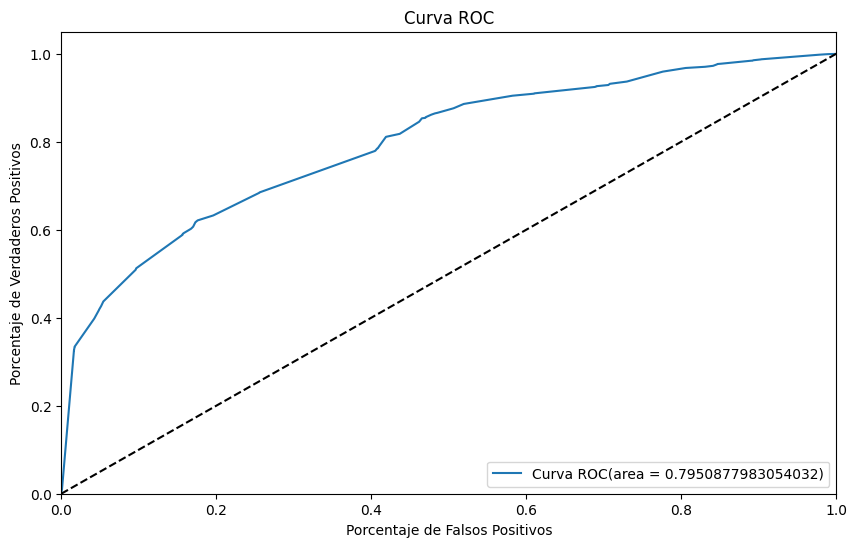
plot_confusion_matrix( DTree_model_ada, X_test, y_test )

Aún teniendo en cuenta lo anterior, se encuentra que el modelo balanceado es decente para la clasificación.
Random Forest#
with open( 'Models/RandomForestModel.pkl', 'rb' ) as f:
RForest_model_base = load( f )
RForest_model_ada = load( f )
Base#
DataFrame( [RForest_model_base.best_params_], index = ['Random Forest base'] )
result = evaluate_model( RForest_model_base, X_test, y_test )
indexes.append( 'Random Forest base' )
results.append( result )
DataFrame( [result], index = ['Random Forest base'] )
| Precision | Recall | F1 | AUC | |
|---|---|---|---|---|
| XGBoost base | 0.862516 | 0.161879 | 0.272597 | 0.841861 |
Podemos ver que tiene tanto una buena precisión, como un buen AUC.
feature_importances = RForest_model_base.best_estimator_.feature_importances_
sorted_indices = argsort(feature_importances)
sorted_feature_names = [X_train.columns[i] for i in sorted_indices]
plt.figure(figsize=(10, 6))
plt.barh(range(len(feature_importances)), feature_importances[sorted_indices], align='center')
plt.yticks(range(len(feature_importances)), sorted_feature_names)
plt.xlabel('Feature Importance')
plt.ylabel('Feature')
plt.title('Feature Importances (XGBoost)')
plt.show()

Como es tendencia para otros modelos, las variables que más influyen en la decisión para el conjunto baje son C1 y el código de producto.
plot_confusion_matrix( RForest_model_base, X_test, y_test )

Por otro lado, se observa el comportamiento esperado donde se clasifica la mayoría de las etiquetas como negativas dado el desbalance.
plot_roc_curve( RForest_model_base, X_test, y_test )
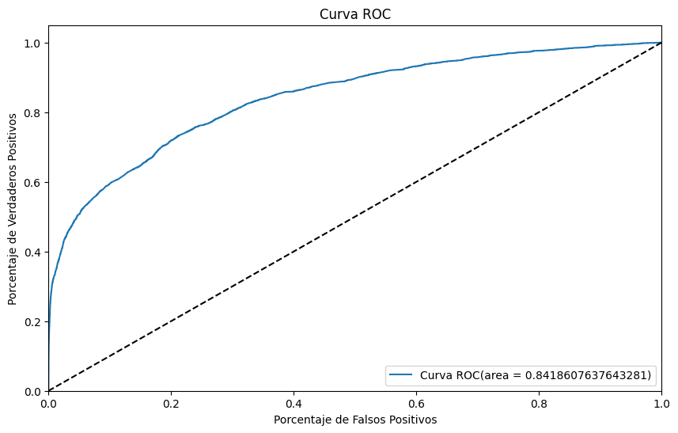
AdaSyn#
DataFrame( [RForest_model_ada.best_params_], index = ['Random Forest AdaSyn'] )
result = evaluate_model( RForest_model_ada, X_test, y_test )
indexes.append( 'Random Forest AdaSyn' )
results.append( result )
DataFrame( [result], index = ['Random Forest AdaSyn'] )
| Precision | Recall | F1 | AUC | |
|---|---|---|---|---|
| Random Forest AdaSyn | 0.12601 | 0.667965 | 0.212023 | 0.83184 |
Este modelo también sigue la tendencia de intercambiar precision por recall, curiosamente el auc sufre un impacto mediado con respecto a la base desbalanceada.
feature_importances = RForest_model_ada.best_estimator_.feature_importances_
sorted_indices = argsort(feature_importances)
sorted_feature_names = [X_train.columns[i] for i in sorted_indices]
plt.figure(figsize=(10, 6))
plt.barh(range(len(feature_importances)), feature_importances[sorted_indices], align='center')
plt.yticks(range(len(feature_importances)), sorted_feature_names)
plt.xlabel('Feature Importance')
plt.ylabel('Feature')
plt.title('Feature Importances (XGBoost)')
plt.show()
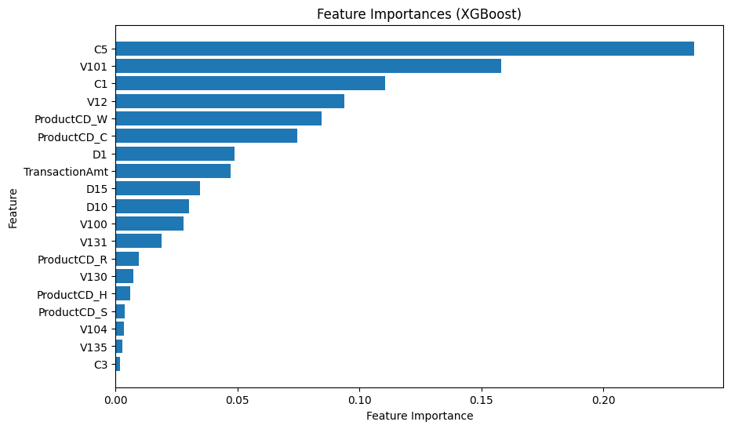
Así como es tendencia para otros modelos, Las variables más importantes son C5 y V101, mientras el resto de variables tienen un grado de importancia.
plot_confusion_matrix( RForest_model_ada, X_test, y_test )
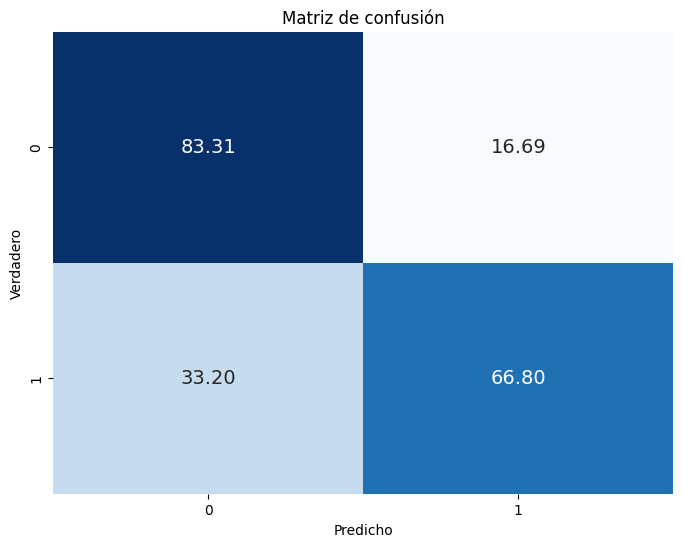
Podemos ver el resultado del rebalanceamiento en esta gráfica, y el intercambio de métricas antes mencionado.
plot_roc_curve( RForest_model_ada, X_test, y_test )
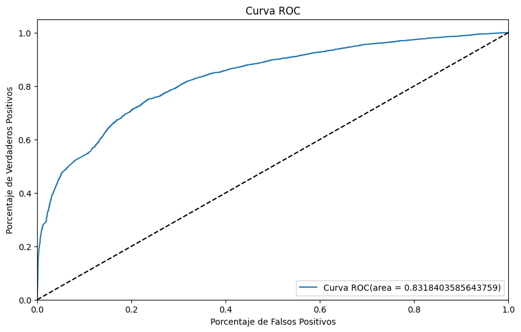
A su vez, la curva roc se mantiene similar a su versión sin balancear.
XGBoost#
from pandas import DataFrame
with open( 'Models/XGBoostModel.pkl', 'rb' ) as f:
XGBoost_model_base = load( f )
XGBoost_model_ada = load( f )
from numpy import array
y_test = array(y_test)
Base#
El modelo con la base de datos sin AdaSyn resultó en los siguientes parámetros
DataFrame( [XGBoost_model_base.best_params_], index = ['XGBoost base'] )
| learning_rate | max_depth | n_estimators | |
|---|---|---|---|
| XGBoost base | 0.051461 | 8 | 177 |
Podemos visualizar qué variables influyen fuertemente en la decisión del arbol por medio del siguiente gráfico
from numpy import argsort
feature_importances = XGBoost_model_base.best_estimator_.feature_importances_
sorted_indices = argsort(feature_importances)
sorted_feature_names = [X_train.columns[i] for i in sorted_indices]
plt.figure(figsize=(10, 6))
plt.barh(range(len(feature_importances)), feature_importances[sorted_indices], align='center')
plt.yticks(range(len(feature_importances)), sorted_feature_names)
plt.xlabel('Feature Importance')
plt.ylabel('Feature')
plt.title('Feature Importances (XGBoost)')
plt.show()
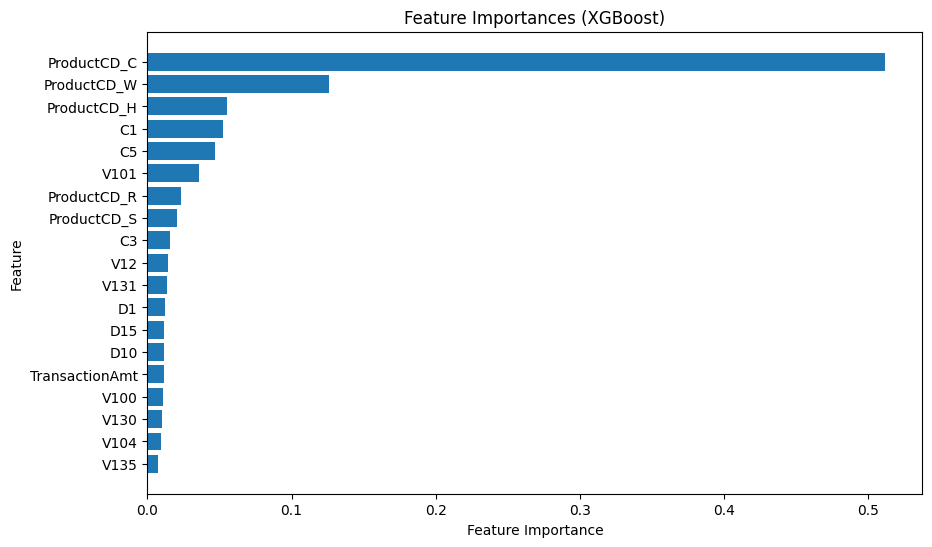
Es evidente que la variable que más influenció en la predicción es el código de producto.
Ahora bien, podemos ver el resultado de la evaluación del modelo en función del set de prueba:
result = evaluate_model( XGBoost_model_base, X_test, y_test )
indexes.append( 'XGBoost base' )
results.append( result )
DataFrame( [result], index = ['XGBoost base'] )
| Precision | Recall | F1 | AUC | |
|---|---|---|---|---|
| XGBoost base | 0.809617 | 0.303311 | 0.441296 | 0.875949 |
Es evidente que dada la gran desproporción entre positivos y negativos, el recall sufre un gran golpe, por el contrario, tiene una precisión muy buena, por lo que es capaz de predecir correctamente los verdaderos negativos.
plot_roc_curve( XGBoost_model_base, X_test, y_test )
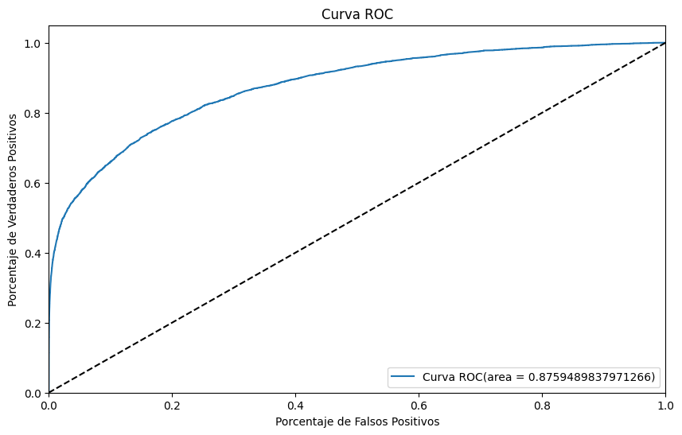
De la curva ROC podemos observar que a nivel general, tiene una capacidad decente de predicción, ya que a pesar de haber fallado en la mayoría de valores positivos, estos componen una fracción mínima del conjunto de datos.
plot_confusion_matrix( XGBoost_model_base, X_test, y_test )
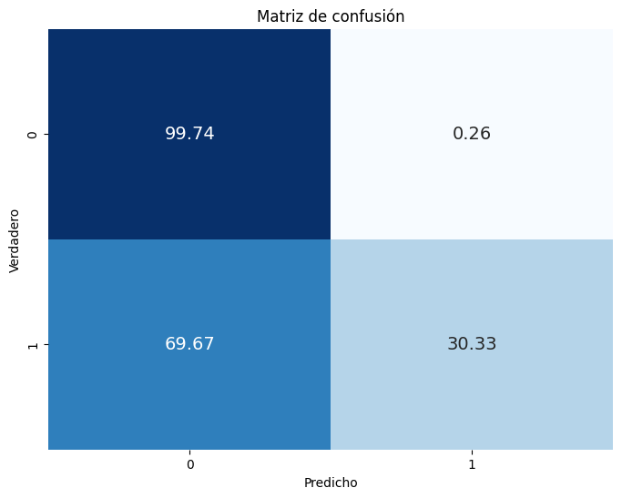
Aquí podemos evidenciar de forma clara lo mencionado anteriormente, a pesar que el porcentaje de falsos positivos se mantiene extremadamente bajo, el precio es una predicción extremadamente inexacta para las transacciones fradulentas.
AdaSyn#
El mejor modelo XGBoost para la base de datos balanceada resultó con los siguientes parámetros
DataFrame( [XGBoost_model_ada.best_params_], index = ['XGBoost base'] )
| learning_rate | max_depth | n_estimators | |
|---|---|---|---|
| XGBoost base | 0.08501 | 8 | 93 |
Podemos ver las variables más importantes para el modelo en la siguiente gráfica
from numpy import argsort
feature_importances = XGBoost_model_ada.best_estimator_.feature_importances_
sorted_indices = argsort(feature_importances)
sorted_feature_names = [X_train.columns[i] for i in sorted_indices]
plt.figure(figsize=(10, 6))
plt.barh(range(len(feature_importances)), feature_importances[sorted_indices], align='center')
plt.yticks(range(len(feature_importances)), sorted_feature_names)
plt.xlabel('Feature Importance')
plt.ylabel('Feature')
plt.title('Feature Importances (XGBoost)')
plt.show()

Así como en el modelo anterior, el código de producto tiene una influencia muy grande sobre la decisión final, pero a diferencia de esta, muchas más variables presentan una mayor importancia para la detección de fraude como las variables C1 y V101
La evaluación del modelo es la siguiente:
result = evaluate_model( XGBoost_model_ada, X_test, y_test )
indexes.append( 'XGBoost AdaSyn' )
results.append( result )
DataFrame( [result], index = ['XGBoost AdaSyn'] )
| Precision | Recall | F1 | AUC | |
|---|---|---|---|---|
| XGBoost AdaSyn | 0.156822 | 0.567429 | 0.245731 | 0.827788 |
En comparación con el modelo anterior, presenta peores resultados en todas las métricas a excepción del Recall, lo que indica una mejor capacidad para detectar valores positivos en la variable respuesta. La curva ROC es la siguiente
plot_roc_curve( XGBoost_model_ada, X_test, y_test )

En comparación con el modelo base, esta curva ROC se ve ligeramente más cercana a la recta. Aún así, indica una buena capacidad para predecir la variable respuesta.
plot_confusion_matrix( XGBoost_model_ada, X_test, y_test )
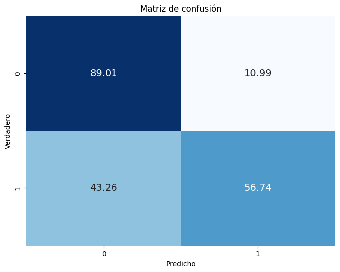
Podemos ver el resultado del balanceamiento claramente en la matriz de correlación; a pesar que se pierde capacidad para predecir correctamente transacciones lícitas, tiene una capacidad mucho mejor para detectar transacciones fraudulentas.
K-NN#
with open( 'Models/KNN_Model.pkl', 'rb' ) as f:
KNN_model_base = load( f )
KNN_model_ada = load( f )
Base#
El mejor numero de vecinos encontrado es
DataFrame( [{'k': KNN_model_base.n_neighbors}], index = ['K-nn Base'] )
| k | |
|---|---|
| Regresión Log base | 114 |
Los resultados del modelo se aprecian a continuación:
result = evaluate_model( KNN_model_base, X_test, y_test )
indexes.append( 'k-NN base' )
results.append( result )
DataFrame( [result], index = ['K-nn base'] )
| Precision | Recall | F1 | AUC | |
|---|---|---|---|---|
| K-nn base | 0.814925 | 0.132911 | 0.228548 | 0.81979 |
Los resultados del modelo son similares a modelos anteriores, con una alta presisión y auc, y valores de f1 y recall bajos.
plot_roc_curve( KNN_model_base, X_test, y_test )

plot_confusion_matrix( KNN_model_base, X_test, y_test )
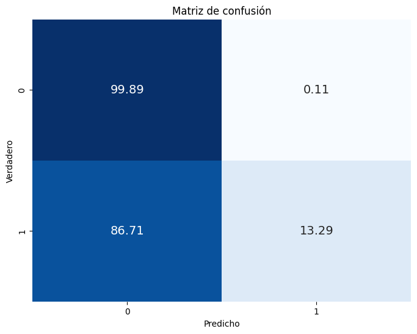
AdaSyn#
DataFrame( [{'k': KNN_model_ada.n_neighbors}], index = ['K-nn AdaSyn'] )
| k | |
|---|---|
| K-nn AdaSyn | 1 |
Curiosamente, el mejor modelo para el set balanceado es un 1-NN.
result = evaluate_model( KNN_model_ada, X_test, y_test )
indexes.append( 'k-NN AdaSyn' )
results.append( result )
DataFrame( [result], index = ['K-nn base'] )
| Precision | Recall | F1 | AUC | |
|---|---|---|---|---|
| K-nn base | 0.253661 | 0.497566 | 0.336018 | 0.722406 |
Desafortunadamente, este modelo tambien sacrifica mucho la precisón por el recall. Curiosamente tiene un buen f1 y un auc no muy bueno.
plot_roc_curve( KNN_model_ada, X_test, y_test )
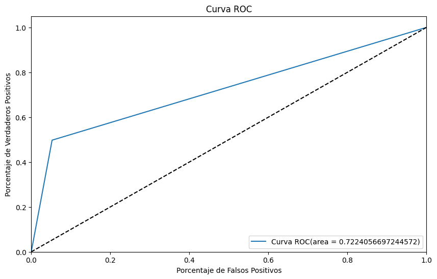
plot_confusion_matrix( KNN_model_ada, X_test, y_test )
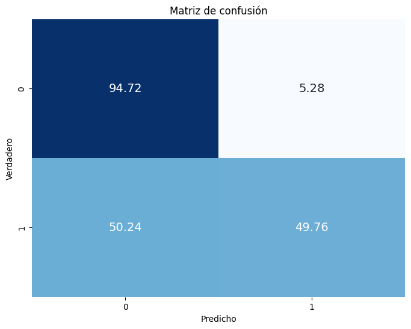
Una ventaja que posee este modelo con respecto a otros rebalanceados, es que mantiene una ventaja con respecto a el número de verdaderos negativos, mientras aumenta ligeramente el porcentaje de verdaderos positivos. A pesar que esta última proporción sea inferior al 50%.
Regresión logística con penalización#
from pandas import DataFrame
with open( 'Models/LogisticModel.pkl', 'rb' ) as f:
LogReg_model_base = load( f )
LogReg_model_ada = load( f )
Modelo base#
Los mejores parámetros para el modelo base se ven a continuación
DataFrame( [LogReg_model_base.best_params_], index = ['Regresión Log base'] )
| classifier__C | classifier__penalty | |
|---|---|---|
| Regresión Log base | 7 | l2 |
result = evaluate_model( LogReg_model_base, X_test, y_test )
indexes.append( 'LogReg base' )
results.append( result )
DataFrame( [result], index = ['Regresión Log base'] )
| Precision | Recall | F1 | AUC | |
|---|---|---|---|---|
| Regresión Log base | 0.133333 | 0.000487 | 0.00097 | 0.743102 |
Es bastante evidente que este es el peor modelo generado, solo teniendo un puntaje mediocre en el AUC. Veamos ahora la matriz de confusión generada para tener un mejor entendimiento de los resultados
plot_confusion_matrix( LogReg_model_base, X_test, y_test )
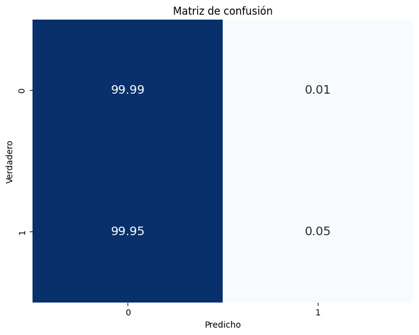
Este modelo evidencia claramente el problema de tener una base de datos con una gran disparidad, ya que el modelo tiene una tendencia a predecir aproximadamente todos los puntos como falsos, por lo que se explica el buen desempeño en cuanto al AUC y el pobre desempeño en las otras métricas. Podemos ver a continuación la curva ROC generada.
plot_roc_curve( LogReg_model_base, X_test, y_test )

Como se mencionó antes, tiene un peor desempeño a los modelos antes vistos. Aún así, la curva ROC indica que es un predictor decente para la variable respuesta.
AdaSyn#
Los mejores parámetros para el modelo AdaSyn se ven a continuación
DataFrame( [LogReg_model_ada.best_params_], index = ['Regresión Log AdaSyn'] )
| classifier__C | classifier__penalty | |
|---|---|---|
| Regresión Log AdaSyn | 4 | l1 |
result = evaluate_model( LogReg_model_ada, X_test, y_test )
indexes.append( 'LogReg AdaSyn' )
results.append( result )
DataFrame( [result], index = ['Regresión Log AdaSyn'] )
| Precision | Recall | F1 | AUC | |
|---|---|---|---|---|
| Regresión Log AdaSyn | 0.080361 | 0.661879 | 0.14332 | 0.749017 |
El modelo sigue la tendencia de reducir la precisión para aumentar el recall. Se puede decir que tiene un AUC bajo comparado al resto.
plot_roc_curve( LogReg_model_ada, X_test, y_test )
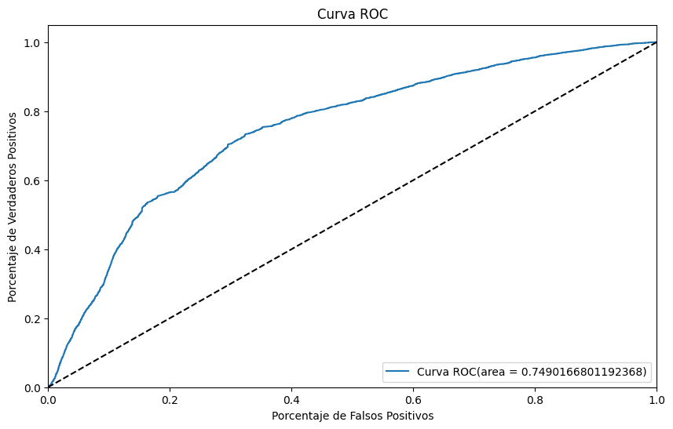
plot_confusion_matrix( LogReg_model_ada, X_test, y_test )
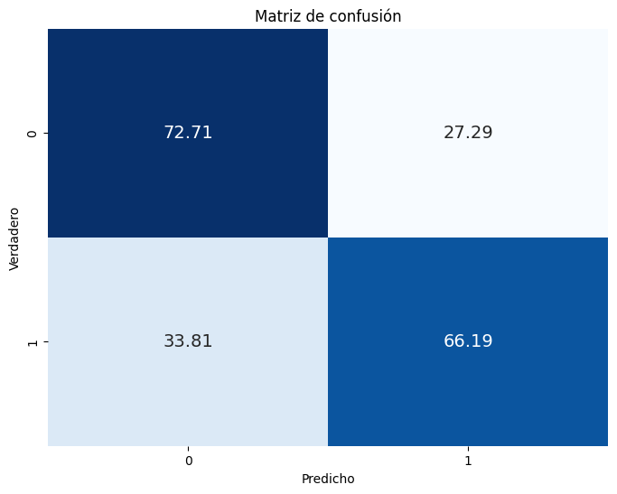
Como se menciona en la revisión de resultados, el modelo disminuye los verdaderos negativos para aumentar los verdaderos positivos.
Comparación de modelos#
Podemos ver los resultados de todos lo modelos mediante la siguiente tabla.
DataFrame( results, index = indexes )
| Precision | Recall | F1 | AUC | |
|---|---|---|---|---|
| Naive Bayes Base | 0.482731 | 0.146300 | 0.224547 | 0.751902 |
| Naive Bayes AdaSyn | 0.078335 | 0.701315 | 0.140928 | 0.752869 |
| Decision Tree Base | 0.782021 | 0.239289 | 0.366449 | 0.811308 |
| Decision Tree AdaSyn | 0.113877 | 0.606865 | 0.191769 | 0.795088 |
| Random Forest base | 0.862516 | 0.161879 | 0.272597 | 0.841861 |
| Random Forest AdaSyn | 0.126010 | 0.667965 | 0.212023 | 0.831840 |
| XGBoost base | 0.809617 | 0.303311 | 0.441296 | 0.875949 |
| XGBoost AdaSyn | 0.156822 | 0.567429 | 0.245731 | 0.827788 |
| k-NN base | 0.814925 | 0.132911 | 0.228548 | 0.819790 |
| k-NN AdaSyn | 0.253661 | 0.497566 | 0.336018 | 0.722406 |
| LogReg base | 0.133333 | 0.000487 | 0.000970 | 0.743102 |
| LogReg AdaSyn | 0.080361 | 0.661879 | 0.143320 | 0.749017 |
Teniendo en cuenta que la métrica objetivo es el AUC, el mejor modelo proviene de un XGBoost con una tasa de aprendizaje del 0.051461, profundidad 8 y 177 estimadores. Cabe anotar que este tambien fue el que obtuvo mejor Precision y F1, tendencia que se viene encontrando desde el inicio. Por otro lado, el modelo con el mejor recall es un modelo de clasificación bayesiana para la base de datos rebalanceada.